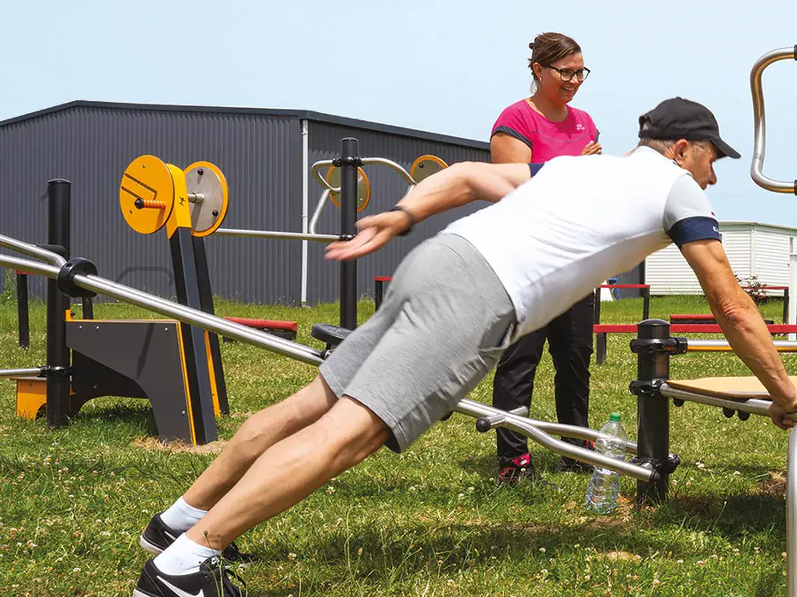
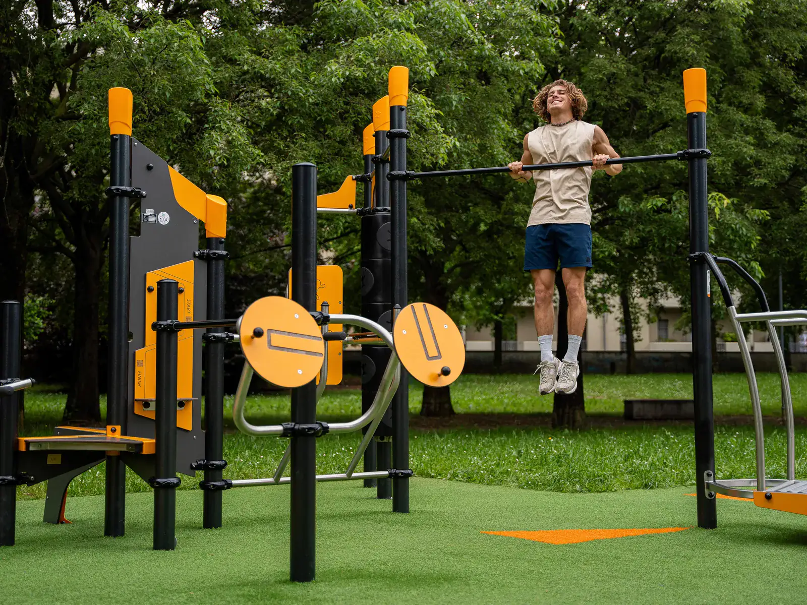
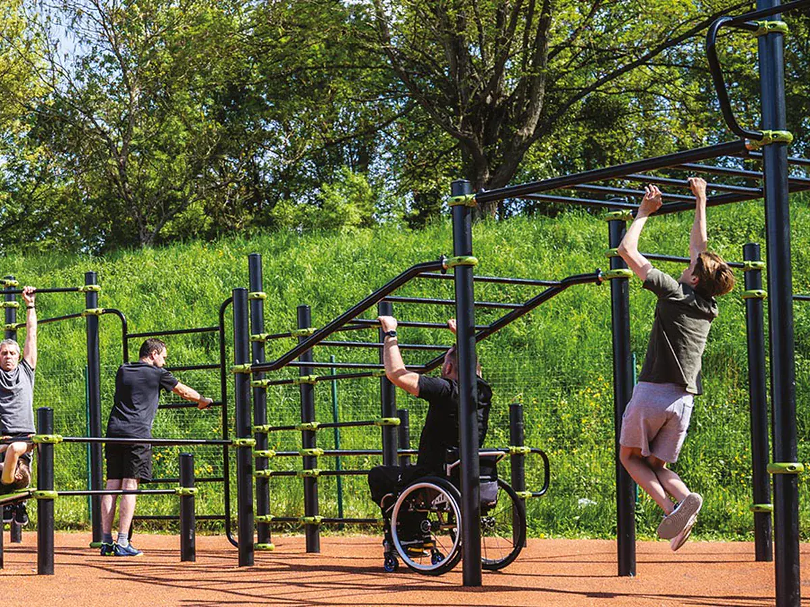
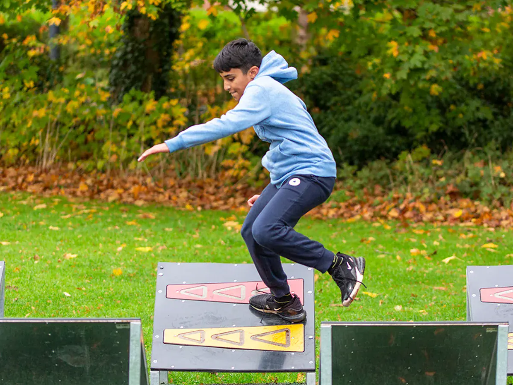
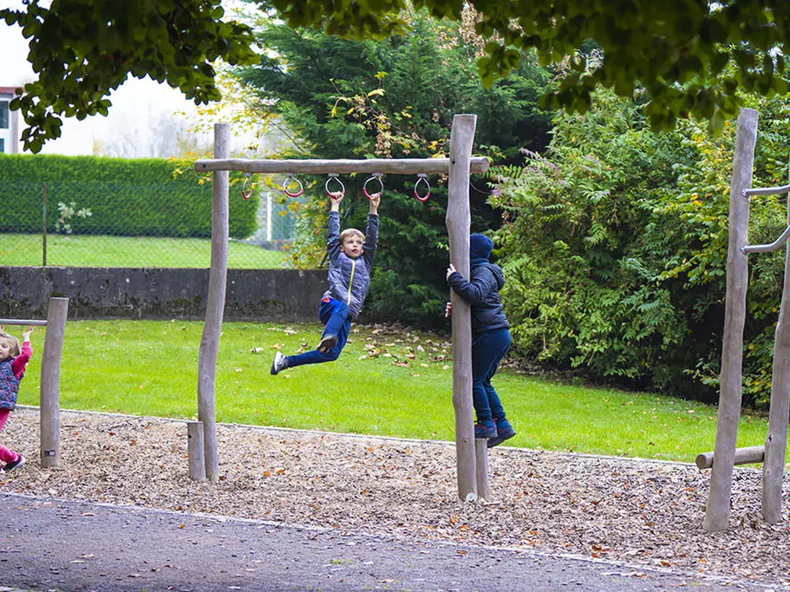
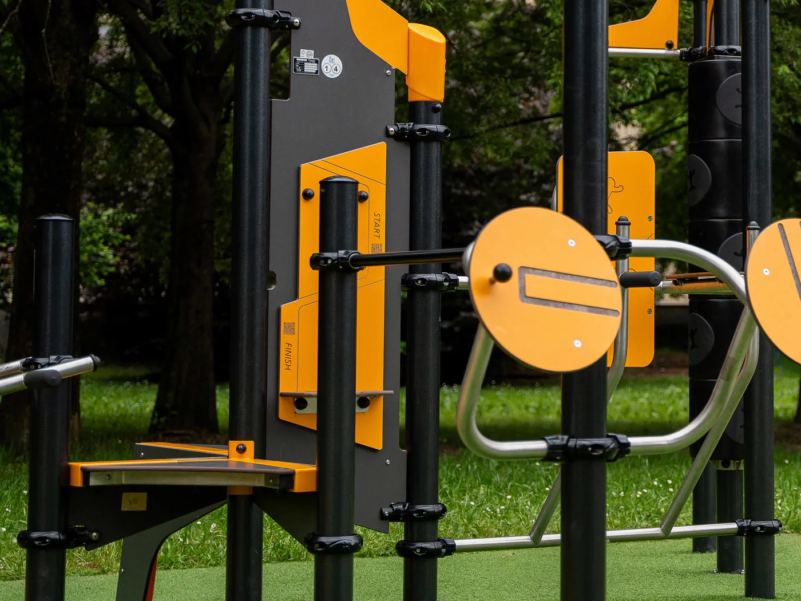

Biosaludables
Máquinas de bajo impacto para movilidad y acondicionamiento, sin pesas ni resistencia que ajustar. Eso es lo que las vuelve seguras en un espacio sin supervisión, y lo que permite que las use cualquiera.
Equipamiento para incentivar la actividad física y los hábitos saludables al aire libre, con opciones para todas las edades. Lo diseñamos, lo instalamos y lo dejamos señalizado, que es lo que hace que de verdad se use.

Casi ningún proyecto lleva una sola. La mezcla depende de quién va a usar el espacio y a qué hora.

Máquinas de bajo impacto para movilidad y acondicionamiento, sin pesas ni resistencia que ajustar. Eso es lo que las vuelve seguras en un espacio sin supervisión, y lo que permite que las use cualquiera.

Barras, paralelas, espalderas y anillas para entrenar con el peso del cuerpo. Un módulo bien resuelto le sirve igual al que empieza que al que lleva años, porque la dificultad la pone el usuario y no el equipo.

Recorridos de obstáculos en suspensión. Son los que atraen a la franja adolescente, que es la que antes se aburre de un parque y la más difícil de retener con el juego de siempre.

Un gimnasio al aire libre no es una sala de pesas a la intemperie. Se diseña para que por la mañana lo use el adulto mayor y por la tarde los jóvenes, sin que ninguno de los dos le estorbe al otro.

Inspirar momentos mágicos y seguros mediante el desarrollo de espacios urbanos.
Un gimnasio al aire libre es de las pocas cosas que se instalan una vez y cambian la rutina de un barrio entero. No pide inscripción, no cierra y no cuesta nada usarlo.
Ver los proyectos terminadosUn equipo certificado mal instalado deja de cumplir, y la superficie no se elige por metro cuadrado sino por la altura de caída de cada módulo. Contamos la cadena completa —qué certifica el fabricante, qué define la superficie, qué responde el instalador y qué papeles te quedan a ti— en una página aparte.
Ver normativa y certificacionesMenos del que se cree, pero cada equipo tiene su área de uso, que es el espacio que necesita la persona para moverse sin golpear a nadie ni golpearse. Esa área la fija la ficha técnica del equipo. Con las medidas del espacio te decimos cuántos módulos caben de verdad.
Revisión periódica de anclajes, uniones y partes móviles, y retoque de pintura según la exposición. El mantenimiento es más barato que en un parque infantil porque hay menos piezas móviles, pero no es cero: un equipo con una unión floja deja de ser seguro.
Los biosaludables se diseñan precisamente para eso: movilidad articular, equilibrio y bajo impacto, sin cargas que ajustar. Entre semana suelen ser los equipos más usados del parque, y conviene ubicarlos cerca de bancas y de sombra.
Depende del equipo. Los que implican altura o suspensión —calistenia y circuitos ninja— necesitan superficie amortiguante; los biosaludables de bajo impacto no siempre. Lo revisamos equipo por equipo antes de cotizar el piso.
Sí, y es una de las instalaciones que mejor recibe la copropiedad porque la usan todas las edades y ocupa poco. También trabajamos con colegios, alcaldías, cajas de compensación y constructoras.
Cuéntanos qué quieres transformar y te proponemos una solución a la medida.
Cotiza tu proyecto